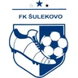

, výkop 09:00
DomáciHostia
 TJ Družstevník Chtelnica
TJ Družstevník Chtelnicabez výsledku
 MFK Vrbové U9
MFK Vrbové U9Návrh webu, nie oficiálna stránka klubu
Prípravka U9 ObFZ Trnava, 8. miesto z 12
, výkop 09:00
TJ Družstevník ChtelnicaMFK Vrbové U9Výsledky prípraviek sa nezapisujú, rozpis zápasov je nižšie.
Prípravka U9 ObFZ Trnava
| # | Tím | Z | V | R | P | Skóre | B |
|---|---|---|---|---|---|---|---|
| 1. | 11 | 0 | 11 | 0 | 0:0 | 11 | |
| 2. | 11 | 0 | 11 | 0 | 0:0 | 11 | |
| 3. | 11 | 0 | 11 | 0 | 0:0 | 11 | |
| 4. | 11 | 0 | 11 | 0 | 0:0 | 11 | |
| 5. | 11 | 0 | 11 | 0 | 0:0 | 11 | |
| 6. | 11 | 0 | 11 | 0 | 0:0 | 11 | |
| 7. | 11 | 0 | 11 | 0 | 0:0 | 11 | |
| 8. | 11 | 0 | 11 | 0 | 0:0 | 11 | |
| 9. | 11 | 0 | 11 | 0 | 0:0 | 11 | |
| 10. | 11 | 0 | 11 | 0 | 0:0 | 11 | |
| 11. | 11 | 0 | 11 | 0 | 0:0 | 11 | |
| 12. |  FK Šulekovo | 11 | 0 | 11 | 0 | 0:0 | 11 |
Hráči, ktorí v kalendárnom roku 2026 nastúpili alebo boli v nominácii na zápas (podľa Sportnetu). Pri mládeži uvádzame len mená.